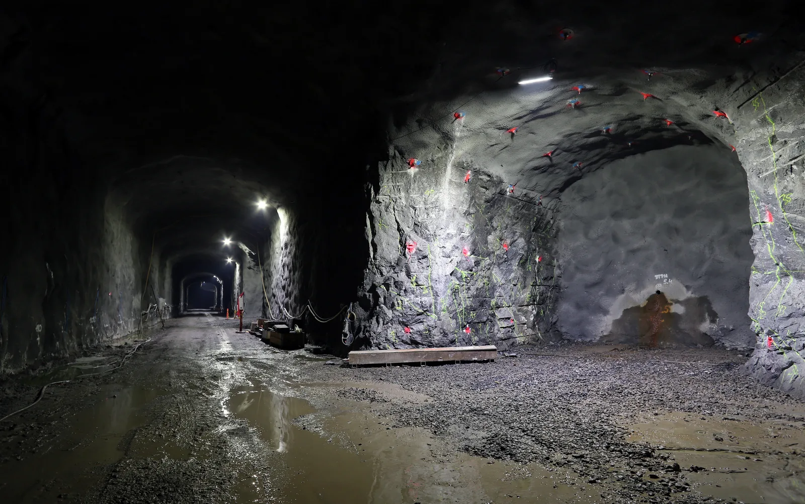

Fission, fusion and nuclear power
Why does one gram of uranium-235 release as much energy in fission as about $2.8$ tonnes of coal do when burned?
Prior knowledge
- The mass defect of a nucleus corresponds to its binding energy, and $1\,\text{u}$ corresponds to an energy of $931.5\,\text{MeV}$chapter Mass defect and nuclear binding energy
- The activity of a radioactive substance decreases to half in every half-life according to the decay lawchapter The decay law and half-life
Think about it
The third unit of Olkiluoto alone produces an electric power of $1600\,\text{MW}$, and its reactor core contains about $130$ tonnes of uranium. A coal power plant would have to burn about $12\,000$ tonnes of coal every day to produce the same electricity. The energy of a nuclear power plant comes from atomic nuclei that split in two. Every splitting releases neutrons, which can split new nuclei.
Where does the energy released when a nucleus splits come from, and how does a reactor keep the chain of neutrons from running out of control?
Optional Review: mass defect
Predict
Prediction 1: steady power
More predictions 1 question
Prediction 2: a small excess
Investigate
Simulation
How to use
Start runs the chain one generation at a time, and Stop stops it; the generation can also be chosen with the slider Generation $0$–$30$. Control rods in $s$ sets the depth of the rods, $0$–$100\,\%$. Draw chooses one of three random series: the same series always gives the same result. On the left (at the top on a narrow screen) the grey dots are the neutrons of the generation, at most $160$ at a time. During a run a neutron either causes a fission (orange flash), disappears into a control rod or escapes. In the graph the orange dots are the number of neutrons $N$ in each generation and the pale dashed line is the model's prediction $N_0 k^g$. Speed changes only the pace of the run.
Assumptions of the model
The model describes the chain reaction in generations, not the real paths of the neutrons or time: in a real reactor a generation lasts about a ten-thousandth of a second. Each neutron causes a fission with the same probability regardless of the other neutrons, and a fission produces $2$ or $3$ new neutrons, $2.5$ on average. The control rods reduce the probability of fission. The model has no delayed neutrons, no effect of temperature and no burn-up of the fuel. The readouts are values of the model, not measurements.
How the calculation works
A neutron causes a fission with the probability $P_\text{f} = (1.2 - 0.008\,s) : 2.5$, where $s$ is the depth of the rods as a percentage. Otherwise it disappears: into a control rod with the probability $0.0032\,s$, and otherwise by escaping or being absorbed elsewhere. A fission produces $2$ or $3$ neutrons with equal probability, so the multiplication factor is $k = 2.5\,P_\text{f} = 1.2 - 0.008\,s$. The neutrons of the next generation are the neutrons produced in the fissions. The readout $N_g : N_{g-1}$ is the realised growth of the series from the previous generation, and $N_0 k^g$ is the model's average prediction.
At the start the reactor core has $1000$ neutrons. Adjust the depth of the control rods and follow how the number of neutrons changes from generation to generation.
Experiment 1: control rods and the multiplication factor
Test prediction 1. Choose generation $g = 20$ and series 1 as the draw. Change only the depth of the control rods: record the multiplication factor $k$ and the number of neutrons $N$ at least when the rods are in $0\,\%$, $25\,\%$ and $50\,\%$.
- Initial state
- control rods in $s$ = $0\,\%$, generation $g$ = $20$, draw: series 1
- Kept constant
- generation $g$, draw
- Varied
- control rods in $s$
| control rods in $s$ | $k$ | $N$ |
|---|
More to investigate 2 tasks
Experiment 2: growth generation by generation
Test prediction 2. The control rods are in $20\,\%$, so $k = 1.04$, and the draw is series 1. Change only the generation: record the number of neutrons $N$ at least in generations $0$, $10$, $20$ and $30$.
- Initial state
- control rods in $s$ = $20\,\%$, generation $g$ = $0$, draw: series 1
- Kept constant
- control rods in $s$, draw
- Varied
- generation $g$
| generation $g$ | $N$ | N₀kᵍ |
|---|
Conclusion: a controlled chain reaction
Write on the basis of your tables: At what value of the multiplication factor did the number of neutrons stay roughly constant, and what happened at smaller and larger values? How did the number of neutrons grow when $k = 1.04$? Why must the multiplication factor of a reactor be kept very precisely at $1$?
Model answer
In experiment 1, the model's values for the number of neutrons in generation $20$ were $39\,387$ with the rods out ($k = 1.20$), $934$ with the rods $25\,\%$ in ($k = 1.00$) and only $7$ with the rods $50\,\%$ in ($k = 0.80$). When every neutron produces on average exactly one new fission neutron, the chain stays steady; because of randomness the number varies slightly. In experiment 2, with $k = 1.04$, there were $1000$, $1437$, $1987$ and $3264$ neutrons in generations $0$, $10$, $20$ and $30$: the number was multiplied by $1.04$ in every generation, so the growth accelerated. Because a generation in a real reactor lasts only about a ten-thousandth of a second, even a small excess would increase the power quickly. This is why the multiplication factor is kept precisely at $1$ with the control rods, and the delayed neutrons give the control time to act.
Assess your own answer
Tick the points your own answer already contains.
Theory
Key idea
Heavy nuclei split, light nuclei join
In the chapter Mass defect and nuclear binding energy, the binding energy of a nucleus was calculated from the mass defect. When the binding energy is divided by the number of nucleons, the result is the binding energy per nucleon $\tfrac{E_\text{B}}{A}$. It tells how tightly the protons and neutrons of a nucleus are bound on average. The peak of the graph is at iron and nickel, about $8.8\,\text{MeV}$. Energy is released whenever the nucleons in the products of a nuclear reaction are bound more tightly than those in the starting materials. So a heavy nucleus can release energy by splitting into two medium-heavy nuclei, and light nuclei can release energy by joining into a heavier nucleus. In both reactions, the graph is climbed upwards, and this shows up as a decrease in mass.
Fission
In fission, a heavy nucleus splits into two medium-heavy nuclei. A uranium-235 nucleus splits easily when it captures a slow neutron. The uranium-236 nucleus that forms vibrates so strongly that it stretches and pinches in two. A typical reaction is $$ {}^{1}_{0}\text{n} + {}^{235}_{92}\text{U} \rightarrow {}^{141}_{56}\text{Ba} + {}^{92}_{36}\text{Kr} + 3\,{}^{1}_{0}\text{n} $$ There are hundreds of ways to split, but the products are always two medium-heavy nuclei, called fission products, and usually two or three new neutrons. Mass number and charge are conserved: $236 = 141 + 92 + 3$ and $92 = 56 + 36$. The fission products fly apart with a large kinetic energy and slow down in the surrounding material, which heats up. Because the fission products have too many neutrons, they are radioactive and decay by beta decay.
Chain reaction
The neutrons released in fission can cause new fissions. This creates a chain reaction, which advances one generation at a time. However, not every neutron causes a fission: some escape from the fuel and some are absorbed by other nuclei. The progress of the chain is described by the multiplication factor $k$, which tells how many neutrons of the next generation one neutron produces on average. If generation $0$ has $N_0$ neutrons, generation $g$ has on average $$ N_g = N_0 k^g $$ where $N_g$ is the number of neutrons in generation $g$ and $k$ is the multiplication factor. When $k < 1$, the chain dies out. When $k = 1$, the chain is critical and fissions occur at a steady rate. When $k > 1$, the number of fissions grows exponentially.
Nuclear reactor
A nuclear reactor is a device in which the chain reaction is kept under control at the critical point, $k = 1$. The fuel is uranium dioxide in which the share of uranium-235 has been enriched from the natural $0.7\,\%$ to about $3$–$5\,\%$. The neutrons produced in fission are fast, but uranium-235 splits much more probably when a slow neutron hits it. This is why a reactor has a moderator, in a light-water reactor ordinary water: the neutrons lose their energy by colliding with the hydrogen nuclei of the water molecules. The same water acts as a coolant that carries the heat away. Control rods contain a substance, such as boron, that absorbs neutrons. When the rods are pushed in deeper, the multiplication factor decreases.
A reactor can be controlled because a small share of the neutrons, about $0.65\,\%$ for uranium-235, is released only seconds later, from the decay of fission products. These delayed neutrons slow down the changes in the chain so much that the control rods have time to react. In a nuclear power plant, the heat of the reactor produces steam that turns a turbine and a generator, as in other thermal power plants.
Fusion
In fusion, two light nuclei join to form a heavier nucleus. The most promising reaction for power plants is the fusion of deuterium and tritium: $$ {}^{2}_{1}\text{H} + {}^{3}_{1}\text{H} \rightarrow {}^{4}_{2}\text{He} + {}^{1}_{0}\text{n} $$ The nuclei are positively charged and repel each other, so they reach the range of the strong interaction only when they collide at a very high speed. This is why the fuel must be heated into a plasma at a temperature of about $1.5 \cdot 10^{8}\,\text{K}$. In the core of the Sun, hydrogen fuses into helium at about $1.5 \cdot 10^{7}\,\text{K}$, because the enormous density and tunnelling (chapter Lasers and quantum structures) help the nuclei to join.
There is no fusion power plant yet. The goal of ITER, the international experimental reactor being built in France, is to produce a fusion power of $500\,\text{MW}$, ten times the power of $50\,\text{MW}$ used to heat the plasma. The figure $500\,\text{MW}$ is the power released in the fusion reactions, not electric power: ITER is an experimental device that does not supply electricity to the grid, and the electricity consumption of the whole facility is larger than the plasma heating power. According to ITER's schedule updated in 2024, the deuterium–tritium experiments begin in 2039. You can read more about fusion research in the English-language course FY14 Road to Fusion.
Reaction energy
Energy from the difference in masses
The energy released in a nuclear reaction follows from the equivalence of mass and energy: the total mass of the starting materials is greater than that of the products, and the energy corresponding to the difference is released as the kinetic energy of the products and as gamma radiation. The reaction energy is $$ Q = (m_\text{initial} - m_\text{final})\,c^2 $$ where $m_\text{initial}$ is the total mass of the starting materials, $m_\text{final}$ the total mass of the products and $c$ the speed of light. When $Q > 0$, energy is released. The masses are calculated from the given atomic masses in atomic mass units (the table in the chapter Mass defect and nuclear binding energy). Atomic masses include the electrons too, but when the sum of the atomic numbers is conserved, the masses of the electrons cancel in the difference.
From atomic mass units to megaelectronvolts
The chapter Mass defect and nuclear binding energy stated that the energy corresponding to an atomic mass unit is $931.5\,\text{MeV}$, that is, $1\,\text{u} = 931.5\,\tfrac{\text{MeV}}{c^2}$. When the mass difference is substituted in this unit, the factor $c^2$ cancels: for example, for a mass difference of $0.1\,\text{u}$ we get $$ \begin{aligned} Q &= 0.1 \cdot 931.5\,\tfrac{\text{MeV}}{c^2} \cdot c^2 \\ &= 93.15\,\text{MeV}\text{.} \end{aligned} $$$$ \begin{aligned} &Q \\ &= 0.1 \cdot 931.5\,\tfrac{\text{MeV}}{c^2} \cdot c^2 \\ &= 93.15\,\text{MeV}\text{.} \end{aligned} $$
The figure shows the masses of the fission of uranium-235 before and after the reaction. The mass decreases by only about $0.08\,\%$, but this corresponds to an energy of about $173\,\text{MeV}$. When the later decays of the fission products are included, one fission releases about $200\,\text{MeV}$ on average.
Fission and fusion side by side
In the fusion of deuterium and tritium, the mass decreases by $0.01888\,\text{u}$, so $Q = 17.6\,\text{MeV}$. One fusion therefore releases less energy than one fission, but more per nucleon: about $3.5\,\text{MeV}$ in fusion and about $0.85\,\text{MeV}$ in fission. The fusion of the same mass of fuel therefore releases about four times as much energy as fission.
The question at the beginning can now be answered. One gram of uranium-235 contains $2.56 \cdot 10^{21}$ nuclei. If all of them undergo fission and each releases $200\,\text{MeV}$, the energy released is $8.2 \cdot 10^{10}\,\text{J}$, or about $82\,\text{GJ}$. The heating value of coal is about $29\,\tfrac{\text{MJ}}{\text{kg}}$ (the MAFY tables give $25$–$32\,\tfrac{\text{MJ}}{\text{kg}}$), so the same energy is obtained by burning about $2.8$ tonnes of coal. Burning is a chemical reaction in which the bonds of electrons change, with energies of the order of an electronvolt; in a nuclear reaction the energies are millions of electronvolts.
Nuclear power in Finland
The power plants
Finland has two nuclear power plants and five reactors. In 2024, nuclear power produced about $39\,\%$ of Finland's electricity (Statistics Finland: Production of electricity and heat 2024).
| Unit | Type | Electric power | In operation |
|---|---|---|---|
| Loviisa 1 | pressurised water | $507\,\text{MW}$ | 1977 |
| Loviisa 2 | pressurised water | $507\,\text{MW}$ | 1981 |
| Olkiluoto 1 | boiling water | $890\,\text{MW}$ | 1979 |
| Olkiluoto 2 | boiling water | $890\,\text{MW}$ | 1982 |
| Olkiluoto 3 | pressurised water | $1600\,\text{MW}$ | 2023 |
The type tells whether the reactor is a pressurised-water or a boiling-water reactor. The electric power is the net power, and the column "In operation" gives the year in which commercial operation began. Sources: IAEA PRIS database (2025), Fortum (2023) and Teollisuuden Voima (2023). The Loviisa plant is operated by Fortum and Olkiluoto by Teollisuuden Voima. In 2023 the Government granted the Loviisa units an operating licence until the end of 2050, and in 2018 the first two Olkiluoto units a licence until 2038.
Spent fuel and Onkalo
Fuel removed from a reactor contains radioactive fission products and heavier substances, such as plutonium, formed from uranium by neutron capture. At first its activity and residual heat are so great that it is cooled for decades in water pools. During the first centuries, the activity is dominated by caesium-137 and strontium-90, whose half-lives are about $30\,\text{a}$. The half-life of plutonium-239, however, is $24\,100\,\text{a}$, so spent fuel must be isolated from living nature for hundreds of thousands of years.
Posiva is building Onkalo at Olkiluoto, the world's first repository for spent nuclear fuel. The fuel is sealed in copper canisters, which are placed in the bedrock at a depth of about $430\,\text{m}$ and surrounded by bentonite clay that absorbs water. Copper resists corrosion in oxygen-free groundwater, and the clay slows the movement of water around the canister. Posiva applied for an operating licence in 2021. The Radiation and Nuclear Safety Authority STUK gave a favourable statement on the application in August 2026, and the Government granted the operating licence on 22 October 2026 until the end of 2070. The operating licence does not yet mean that final disposal has begun: actual final disposal can begin only after STUK has inspected the facility and found it ready for operation.

Safety and residual heat
A light-water reactor cannot explode like a nuclear weapon, because its fuel contains only a few percent uranium-235, whereas nuclear weapons use uranium enriched to about $90\,\%$. In addition, when the water boils or heats up, it slows neutrons less well, and the chain reaction weakens by itself. However, shutting down a reactor does not stop the production of heat: the decay of the fission products produces residual heat, about $6\,\%$ of the earlier thermal power immediately after shutdown and about $1$–$2\,\%$ after an hour. This is why a reactor has to be cooled for a long time after shutdown. In the Fukushima accident in 2011, a tsunami cut off the cooling, and the residual heat melted fuel in three reactors.
The nuclear power debate from the point of view of physics
Physics does not decide how much nuclear power society should use, but it helps to tell correct claims from incorrect ones. The life-cycle greenhouse gas emissions of nuclear power are about $12\,\tfrac{\text{g}}{\text{kWh}}$ of carbon dioxide equivalent, of the same order as wind power and about $1.5\,\%$ of the emissions of coal (IPCC 2014). Little fuel is needed, and the plant produces steadily regardless of the weather. On the other hand, spent fuel is dangerous for a very long time, serious accidents such as Chernobyl in 1986 and Fukushima in 2011 are rare but have wide effects, and building power plants is expensive and slow: construction of Olkiluoto 3 began in 2005 and regular electricity production in 2023. Weighing risks against benefits is a matter of values, and the knowledge of physics is the starting point.
Common misconception
Many people think that in fission or fusion some part of the nucleus "turns into energy", for example that some of the nucleons disappear. The number of nucleons, however, is conserved: in fission there are $236$ nucleons before the reaction and the same $236$ after it. The mass decreases because the nucleons of the products are bound more tightly, and a greater binding energy means a smaller total mass. The energy released is the kinetic energy of the products and radiation.
Another mistake is to think that a nuclear power plant could explode like a nuclear bomb. The fuel of a reactor contains too little uranium-235 for a nuclear explosion. In a serious accident the danger is the overheating of the fuel and the release of radioactive substances, not a nuclear explosion.
Summary
- In fission, a heavy nucleus splits into two medium-heavy nuclei, and in fusion, light nuclei join. In both, the binding energy per nucleon of the products is greater, so the mass decreases and energy is released.
- The reaction energy is $Q = (m_\text{initial} - m_\text{final})\,c^2$, and with atomic masses $1\,\text{u} = 931.5\,\tfrac{\text{MeV}}{c^2}$. The fission of uranium-235 releases about $200\,\text{MeV}$, and the fusion of deuterium and tritium $17.6\,\text{MeV}$.
- In a chain reaction, the number of neutrons is $N_g = N_0 k^g$. A reactor is kept critical, $k = 1$, with the help of a moderator and control rods.
- Finland's five reactors at Loviisa and Olkiluoto produced about $39\,\%$ of the electricity in 2024. The spent fuel is to be finally disposed of in Onkalo at a depth of about $430\,\text{m}$.
Optional Return to your predictions
Compare your predictions with the model's values in the experiments. Then return to the opening question: where does the energy released when a uranium nucleus splits come from, and why does one gram of uranium correspond to tonnes of coal?
Would you change your prediction?
Examples
Example 1: Fission of uranium-235
A uranium-235 nucleus captures a slow neutron and splits in the reaction $$ \begin{aligned} &{}^{1}_{0}\text{n} + {}^{235}_{92}\text{U} \rightarrow {}^{141}_{56}\text{Ba} + {}^{92}_{36}\text{Kr} + 3\,{}^{1}_{0}\text{n}\text{.} \end{aligned} $$$$ \begin{aligned} &{}^{1}_{0}\text{n} \\ &+ {}^{235}_{92}\text{U} \rightarrow {}^{141}_{56}\text{Ba} + {}^{92}_{36}\text{Kr} + 3\,{}^{1}_{0}\text{n}\text{.} \end{aligned} $$ The atomic masses are: uranium-235 $235.0439282\,\text{u}$, barium-141 $140.9144033\,\text{u}$, krypton-92 $91.9261731\,\text{u}$ and neutron $1.0086649\,\text{u}$. How much energy is released in the reaction?
Step 1/7
Given and asked. The atomic masses are $m_\text{U} = 235.0439282\,\text{u}$, $m_\text{Ba} = 140.9144033\,\text{u}$, $m_\text{Kr} = 91.9261731\,\text{u}$ and $m_\text{n} = 1.0086649\,\text{u}$. We are asked for the reaction energy $Q$ in megaelectronvolts.
Step 2/7
Principle. The mass of the products of the reaction is smaller than that of the starting materials, and the energy corresponding to the difference is released. The sum of the atomic numbers is conserved ($92 = 56 + 36$), so the electrons in the atomic masses cancel and the atomic masses can be used directly. The starting materials contain one neutron and the products three.
Step 3/7
Formula solved. The reaction energy follows directly from the difference in masses:
$$\begin{aligned} Q &= (m_\text{initial} - m_\text{final})\,c^2 \\ m_\text{initial} &= m_\text{n} + m_\text{U} \\ m_\text{final} &= m_\text{Ba} + m_\text{Kr} + 3m_\text{n} \end{aligned}$$
Step 4/7
Unit conversions. The masses are in atomic mass units, and $1\,\text{u} = 931.5\,\tfrac{\text{MeV}}{c^2}$. When the mass difference is multiplied by this, $c^2$ cancels and the energy comes out directly in megaelectronvolts.
Step 5/7
Substitution. The mass of the starting materials is
and that of the products $$ \begin{aligned} m_\text{final} &= 140.9144033\,\text{u} + 91.9261731\,\text{u} \\ &+ 3 \cdot 1.0086649\,\text{u} \\ &= 235.8665711\,\text{u}\text{.} \end{aligned} $$$$ \begin{aligned} &m_\text{final} \\ &= 140.9144033\,\text{u} \\ &+ 91.9261731\,\text{u} \\ &+ 3 \cdot 1.0086649\,\text{u} \\ &= 235.8665711\,\text{u}\text{.} \end{aligned} $$
$$\begin{aligned} Q &= (m_\text{initial} - m_\text{final})\,c^2 \\ &= (236.0525931\,\text{u} - 235.8665711\,\text{u})\,c^2 \\ &= 0.1860220\,\text{u} \cdot c^2 \\ &= 0.1860220 \cdot 931.5\,\tfrac{\text{MeV}}{c^2} \cdot c^2 \\ &= 173.28\,\text{MeV} \end{aligned}$$$$\begin{aligned} Q &= (m_\text{initial} - m_\text{final})\,c^2 \\ &= (236.0525931\,\text{u} \\ &\quad - 235.8665711\,\text{u})\,c^2 \\ &= 0.1860220\,\text{u} \cdot c^2 \\ &= 0.1860220 \cdot 931.5\,\tfrac{\text{MeV}}{c^2} \cdot c^2 \\ &= 173.28\,\text{MeV} \end{aligned}$$
Step 6/7
Result. About $173\,\text{MeV}$ is released in the reaction. Three significant figures are enough: the atomic masses are very precise, but there are many ways to split, and the energy of a single reaction is not needed more precisely.
Step 7/7
Reasonableness. With rounded numbers the mass difference is about $0.19\,\text{u}$, and $0.19 \cdot 900\,\text{MeV} \approx 171\,\text{MeV}$. The result is also of the same order of magnitude as the estimate from the binding energy graph: the binding energy of $236$ nucleons rises by about $0.9\,\text{MeV}$ per nucleon, that is, by about $210\,\text{MeV}$.
Optional Example 2: Find the error
Example 3: The nuclear power debate through the eyes of physics
Evaluate three claims heard in the debate from the point of view of physics. Say what is correct in them and what is not, and justify your answer with the facts of this chapter.
- “A nuclear power plant can explode like an atomic bomb.”
- “Nuclear electricity is emission-free, so it has no drawbacks.”
- “Spent fuel is dangerous for only a few decades, because its activity decreases quickly.”
Model answer
-
This is not correct. The fuel of a light-water reactor contains about $3$–$5\,\%$ uranium-235, whereas nuclear weapons use uranium enriched to about $90\,\%$. In addition, when the water heats up or boils, it slows neutrons less well and the chain reaction weakens. The danger in a serious accident is the melting of the fuel caused by residual heat and the release of radioactive substances, as at Fukushima in 2011.
-
This is partly true. The life-cycle greenhouse gas emissions are about $12\,\tfrac{\text{g}}{\text{kWh}}$ of carbon dioxide equivalent, of the same order as for wind power. There are still drawbacks: long-lived spent fuel, a small but far-reaching accident risk, the environmental effects of uranium mining, and expensive and slow construction.
-
This is not correct. The half-life of caesium-137 and strontium-90 is about $30\,\text{a}$, so their activity decreases to a thousandth in about $300$ years. The half-life of plutonium-239, however, is $24\,100\,\text{a}$, so the fuel has to be isolated for hundreds of thousands of years, and this is why it is finally disposed of in copper canisters deep in the bedrock in Onkalo.
Assess your own answer
Tick the points your own answer already contains.
Example 4: Apply: the fusion power of ITER
The goal of the ITER experimental reactor is to produce a power of $500\,\text{MW}$ in the fusion of deuterium and tritium. Each fusion ${}^{2}_{1}\text{H} + {}^{3}_{1}\text{H} \rightarrow {}^{4}_{2}\text{He} + {}^{1}_{0}\text{n}$ releases an energy of $17.6\,\text{MeV}$.
How many fusion reactions must take place in the plasma per second? Give the answer in the unit $10^{20}\,\tfrac{1}{\text{s}}$.
Hint 1: a guiding question
Power tells how many joules of energy are released per second. How many joules are released in one reaction?
Hint 2: what is the connection
Convert the reaction energy to joules by substituting $$ \begin{aligned} 1\,\text{MeV} &= 10^{6} \cdot 1.602 \cdot 10^{-19}\,\text{J}\text{.} \end{aligned} $$
Hint 3: an intermediate step
One reaction releases $2.82 \cdot 10^{-12}\,\text{J}$. Divide the power $500 \cdot 10^{6}\,\text{W}$ by this.
Show the solution
Given
fusion power $P = 500\,\text{MW}$, energy of one reaction $Q = 17.6\,\text{MeV}$
Asked
the number of reactions per second $\tfrac{N}{t}$ in the unit $10^{20}\,\tfrac{1}{\text{s}}$
Principle
Power is the energy released per unit time. Each reaction releases the same energy $Q$, so in time $t$ the energy released is $E = NQ$ and the power is $P = \tfrac{NQ}{t}$.
Formula
$P = \dfrac{NQ}{t}$, from which $\dfrac{N}{t} = \dfrac{P}{Q}$
Conversions
Substitution
Answer
$1.77 \cdot 10^{20}\,\tfrac{1}{\text{s}}$
Three significant figures as in the reaction energy $17.6\,\text{MeV}$.
Reasonableness
With rounded numbers
The number is enormous, but little fuel is used: the mass of $1.77 \cdot 10^{20}$ deuterium–tritium pairs is only about $1.5\,\text{mg}$.
Review the chapter's concepts
Cards you mark Review later collect in your review deck.
- Fission
- A heavy atomic nucleus splits into two lighter nuclei and releases energy.
- Chain reaction
- The neutrons released in fission cause new fissions.
- Fusion
- Light atomic nuclei combine into a heavier nucleus and can release energy.
- Fusion reaction
- The energy of stars is produced when light nuclei combine into larger nuclei.
- Nuclear power plant
- The energy released in fission is used to produce electrical energy by way of heat.
- Critical mass
- The smallest amount of fissile material with which a self-sustaining chain reaction is possible.
Exercises
- Exercise 11-4CoreBasic
In the fusion of two deuterium nuclei, a helium-3 nucleus and a neutron are formed: ${}^{2}_{1}\text{H} + {}^{2}_{1}\text{H} \rightarrow {}^{3}_{2}\text{He} + {}^{1}_{0}\text{n}$. The atomic masses are: deuterium $2.0141018\,\text{u}$, helium-3 $3.0160293\,\text{u}$ and neutron $1.0086649\,\text{u}$.
How much energy is released in the reaction? Give the answer in megaelectronvolts.
Answer
$3.27\,\text{MeV}$
Show the solution
Given
atomic masses $m_\text{D} = 2.0141018\,\text{u}$, $m_\text{He} = 3.0160293\,\text{u}$ and $m_\text{n} = 1.0086649\,\text{u}$
Asked
the reaction energy $Q$ in megaelectronvolts
Principle
The reaction releases the energy that corresponds to the difference in masses. The sum of the atomic numbers is conserved ($1 + 1 = 2 + 0$), so the electrons in the atomic masses cancel. The starting materials are two deuterium atoms.
Formula
$Q = (m_\text{initial} - m_\text{final})\,c^2$, from which $Q = (2m_\text{D} - m_\text{He} - m_\text{n})\,c^2$
Conversions
$1\,\text{u} = 931.5\,\tfrac{\text{MeV}}{c^2}$, so $c^2$ cancels and the energy comes out in megaelectronvolts.
Substitution
$Q$$= (4.0282036\,\text{u} - 4.0246942\,\text{u})\,c^2$$= 0.0035094\,\text{u} \cdot c^2$$= 0.0035094 \cdot 931.5\,\tfrac{\text{MeV}}{c^2} \cdot c^2$$= 3.2690\,\text{MeV}$Answer
$3.27\,\text{MeV}$
Three significant figures; the mass difference $0.0035094\,\text{u}$ has been calculated precisely enough.
Reasonableness
The mass difference is about $0.0035\,\text{u}$, and $$ \begin{aligned} 0.0035 \cdot 1000\,\text{MeV} &= 3.5\,\text{MeV}\text{.} \end{aligned} $$ The result is about a fifth of the energy of the fusion of deuterium and tritium, which is one reason why power plants are designed to use tritium.
- Exercise 11-6CoreBasic
In a nuclear reactor there is a moderator, for example water, between the fuel rods. What is the job of the moderator?
Answer
It slows down fast neutrons, because slow neutrons are more likely than fast ones to cause fissions of uranium-235.
Show the solution
Asked
what the job of the moderator of a nuclear reactor is.
Principle
The neutrons produced in fission are very fast, but a uranium-235 nucleus is more likely to capture a slow neutron than a fast one. The moderator is a material whose light nuclei the neutrons collide with and lose kinetic energy.
The moderator neither removes neutrons nor transfers heat: the former is the job of the control rods and the latter that of the coolant.
Model answer
The moderator slows down the fast neutrons produced in fissions, because slow neutrons are more likely than fast ones to cause fissions of uranium-235. In this way the chain reaction keeps going.
The number of neutrons and the multiplication factor are adjusted with the control rods, which capture neutrons, and the heat is transferred to the turbine by the coolant. A neutron does not split into parts as it slows down; it loses kinetic energy in collisions.
- Exercise 11-13CoreApplied
In a reactor start-up test, the number of neutrons in the chain was measured in five successive generations (table, example data). Assume that the multiplication factor $k$ stays the same all the time.
a) Determine the multiplication factor $k$ using the first and last values of the table. Is the reactor subcritical, critical or supercritical?
b) How many neutrons would there be in the chain in generation $50$ if the multiplication factor stayed the same?
The answer box takes the result of part b).
Number of neutrons in the chain Generation $g$ Neutrons $N_g$ 0 1000 1 1013 2 1022 3 1038 4 1049 5 1064 Answer
$N_{50} \approx 1860$
Show the solution
Given
numbers of neutrons $N_0 = 1000$ and $N_5 = 1064$ in generations $0$ and $5$, multiplication factor $k$ constant, generation asked $g = 50$
Asked
a) the multiplication factor $k$ and the criticality of the reactor, b) the number of neutrons $N_{50}$
Principle
When the multiplication factor stays the same, the number of neutrons is multiplied by $k$ in every generation. If $k < 1$, the reactor is subcritical and the chain dies out; if $k = 1$, it is critical and the number stays the same; and if $k > 1$, it is supercritical and the number grows.
The ratios of successive values in the table vary slightly ($1.009$–$1.016$), because the fate of neutrons is random, so $k$ is determined from the whole period using the first and last values.
Formula
$N_g = N_0 k^g$, from which
$k$$= \left(\dfrac{N_5}{N_0}\right)^{1/5}$$N_{50} = N_0 k^{50}$
Conversions
None are needed: the numbers of neutrons are pure numbers.
Substitution
a)
$k$$= \left(\dfrac{1064}{1000}\right)^{1/5}$$= 1.01248$Because $k > 1$, the reactor is supercritical. b) $k^{50} = (k^{5})^{10} = 1.064^{10}$, so
$N_{50}$$= 1000 \cdot 1.064^{10}$$= 1000 \cdot 1.8596$$= 1859.6$Answer
There are $N_{50} \approx 1860$ neutrons according to part b); the multiplication factor is $k = 1.012$ and the reactor is supercritical. Three significant figures are enough, because the values in the table vary randomly.
Reasonableness
The number of neutrons grows by about $1.2\,\%$ per generation, which fits the growth in the table ($6.4\,\%$ in five generations). Doubling would take over $55$ generations, because $1.0125^{55} \approx 1.98$, so in $50$ generations the number is a little less than doubled: $1860 < 2000$.
In a reactor in use, the control rods keep the multiplication factor at $k = 1$.
- Exercise 11-15CoreApplied
A student writes: “A uranium-235 nucleus captures a neutron and splits. Before the reaction there are $236$ nucleons and after the reaction $236$, so the mass of the products is the same as the mass of the starting materials. Therefore no energy is released in fission.” Fission does, however, release energy.
What is the error in the student's reasoning?
Answer
The number of nucleons is conserved, but the nucleons of the products are more tightly bound, so the mass decreases and the mass difference is released as energy.
Show the solution
Asked
what the error is in the student's reasoning when the student concludes that no energy is released in fission.
Principle
The number of nucleons is conserved ($236 = 236$), so the student's starting point is correct. However, mass is not just the number of nucleons times a constant; the binding energy affects it. In the products the binding energy per nucleon is greater than in uranium, so the total mass of the products is smaller.
By the equivalence of mass and energy, the mass difference is released as energy, $Q = \Delta m\,c^2$.
Model answer
The number of nucleons is conserved, but the nucleons of the products are more tightly bound than those of uranium-235, so the total mass of the products is smaller than that of the starting materials. The mass difference is released as energy, so energy is released in fission.
Nucleons do not turn into energy or disappear, and mass and energy are equivalent, not separate. If the nucleons of the products were more loosely bound, the mass would increase and no energy would be released.
Level 1 · basic practice 6 exercises
- Exercise 11-1
In a fusion reactor, tritium can be produced from lithium in the reaction ${}^{6}_{3}\text{Li} + {}^{1}_{0}\text{n} \rightarrow {}^{4}_{2}\text{He} + {}^{3}_{1}\text{H}$. The atomic masses are: lithium-6 $6.0151229\,\text{u}$, neutron $1.0086649\,\text{u}$, helium-4 $4.0026033\,\text{u}$ and tritium $3.0160493\,\text{u}$.
How much energy is released in the reaction? Give the answer in megaelectronvolts.
Answer
$4.78\,\text{MeV}$
Show the solution
Given
atomic masses $m_\text{Li} = 6.0151229\,\text{u}$, $m_\text{n} = 1.0086649\,\text{u}$, $m_\text{He} = 4.0026033\,\text{u}$ and $m_\text{T} = 3.0160493\,\text{u}$
Asked
the reaction energy $Q$ in megaelectronvolts
Principle
The reaction releases an energy that corresponds to the difference between the masses of the starting materials and the products. The sum of the atomic numbers is conserved ($3 + 0 = 2 + 1$), so the electrons in the atomic masses cancel and the atomic masses can be used directly.
Formula
$Q = (m_\text{initial} - m_\text{final})\,c^2$, from which $$ \begin{aligned} Q &= (m_\text{Li} + m_\text{n} - m_\text{He} - m_\text{T})\,c^2 \end{aligned} $$
Conversions
$1\,\text{u} = 931.5\,\tfrac{\text{MeV}}{c^2}$, so the mass difference in atomic mass units is multiplied by $931.5\,\tfrac{\text{MeV}}{c^2}$ and $c^2$ cancels.
Substitution
$Q$$= (7.0237878\,\text{u} - 7.0186526\,\text{u})\,c^2$$= 0.0051352\,\text{u} \cdot c^2$$= 0.0051352 \cdot 931.5\,\tfrac{\text{MeV}}{c^2} \cdot c^2$$= 4.7834\,\text{MeV}$Answer
$4.78\,\text{MeV}$
Three significant figures; the precision of the mass difference $0.0051352\,\text{u}$ would allow even more.
Reasonableness
The mass difference is about $0.005\,\text{u}$, and $$ \begin{aligned} 0.005 \cdot 900\,\text{MeV} &= 4.5\,\text{MeV}\text{.} \end{aligned} $$ The result is smaller than in the fusion of deuterium and tritium ($17.6\,\text{MeV}$) but clearly positive, so the reaction releases energy.
- Exercise 11-2
The total mass of the products of a fission reaction of uranium-235 is $0.1915\,\text{u}$ smaller than that of the starting materials.
How much energy is released in the reaction? Give the answer in megaelectronvolts.
Answer
$178\,\text{MeV}$
Show the solution
Given
decrease in mass $\Delta m = 0.1915\,\text{u}$
Asked
the energy released $Q$ in megaelectronvolts
Principle
Equivalence of mass and energy: when the mass of the products of a reaction is smaller than that of the starting materials, the energy corresponding to the difference is released as the kinetic energy of the products and as radiation.
Formula
$Q = (m_\text{initial} - m_\text{final})\,c^2$, from which $Q = \Delta m\,c^2$
Conversions
$1\,\text{u} = 931.5\,\tfrac{\text{MeV}}{c^2}$; when the mass difference is substituted in this unit, $c^2$ cancels.
Substitution
$Q$$= 0.1915\,\text{u} \cdot c^2$$= 0.1915 \cdot 931.5\,\tfrac{\text{MeV}}{c^2} \cdot c^2$$= 178.38\,\text{MeV}$Answer
$178\,\text{MeV}$
Three significant figures; the mass difference $0.1915\,\text{u}$ is given with four, but a more precise value for the energy of a single fission is not needed.
Reasonableness
With rounded numbers $0.2 \cdot 900\,\text{MeV} = 180\,\text{MeV}$. The result is of the same order of magnitude as the fission energy of the example of the chapter, $173\,\text{MeV}$, and the average of about $200\,\text{MeV}$.
- Exercise 11-3
In generation $0$ of a chain reaction there are $1000$ neutrons, and the multiplication factor is $k = 0.90$. How many neutrons does the chain have on average in generation $10$?
Answer
$349$
Show the solution
Given
number of neutrons at the start $N_0 = 1000$, multiplication factor $k = 0.90$, generation $g = 10$
Asked
the average number of neutrons $N_{10}$ in generation $10$
Principle
Each neutron produces on average $k$ neutrons in the next generation, so the number is multiplied by $k$ in every generation. Because $k < 1$, the chain gradually dies out.
Formula
$N_g = N_0 k^g$
Conversions
None are needed: the number of neutrons and the multiplication factor are pure numbers.
Substitution
$N_{10}$$= 1000 \cdot 0.90^{10}$$= 1000 \cdot 0.34868$$= 348.68$Answer
$349$
Neutrons, and the number is an average, because the fate of individual neutrons is random.
Reasonableness
In every generation $10\,\%$ of the neutrons are lost. If the decrease were always $100$ neutrons, the number would be zero, but $10\,\%$ is taken of an ever smaller number, so about a third is still left.
- Exercise 11-5
The mass of a neutron is $1.0086649\,\text{u}$. What energy does the mass of the neutron correspond to? Give the answer in megaelectronvolts.
Answer
$939.6\,\text{MeV}$
Show the solution
Given
mass of the neutron $m_\text{n} = 1.0086649\,\text{u}$
Asked
the energy corresponding to the mass, $E$, in megaelectronvolts
Principle
According to the equivalence of mass and energy, every mass corresponds to an energy $E = mc^2$, also that of a particle at rest.
Formula
$E = m_\text{n} c^2$
Conversions
$1\,\text{u} = 931.5\,\tfrac{\text{MeV}}{c^2}$, so the mass is multiplied by $931.5\,\tfrac{\text{MeV}}{c^2}$ and $c^2$ cancels.
Substitution
$E$$= 1.0086649\,\text{u} \cdot c^2$$= 1.0086649 \cdot 931.5\,\tfrac{\text{MeV}}{c^2} \cdot c^2$$= 939.57\,\text{MeV}$Answer
$939.6\,\text{MeV}$
Four significant figures like the conversion factor $931.5\,\tfrac{\text{MeV}}{c^2}$.
Reasonableness
The mass of the neutron is a little over $1\,\text{u}$, so the energy must be a little over $931.5\,\text{MeV}$. It is about five times the energy of one fission. The roughly $200\,\text{MeV}$ of fission therefore corresponds to a decrease in mass of only about $0.2\,\text{u}$, less than $0.1\,\%$ of the mass of a uranium atom.
- Exercise 11-7
In the core of the Sun, hydrogen fuses into helium at a temperature of about $15 \cdot 10^{6}\,\text{K}$. Why does fusion require such a high temperature?
Answer
The nuclei repel each other electrically, so they need a large kinetic energy to get close to each other.
Show the solution
Asked
why fusion requires a high temperature.
Principle
Atomic nuclei have a positive charge, so they repel each other electrically. Nuclear forces act only over a very short distance, so the nuclei have to get that close to each other. At a high temperature the kinetic energy of the particles is large, and some of the nuclei get close enough in spite of the repulsion.
Model answer
The nuclei repel each other electrically, so they need a large kinetic energy to get close to each other. When the nuclei are close enough, the short-range nuclear forces overcome the electric repulsion and the nuclei join together.
Temperature does not make the nuclei radioactive or reduce their mass, and at such a high temperature matter is not a liquid but plasma. The decrease in mass takes place only in the fusion reaction, and it releases energy.
- Exercise 11-8
In one fission of uranium-235, an average of $200\,\text{MeV}$ of energy is released.
How much is this in joules? Use the conversion factor $1\,\text{eV} = 1.602 \cdot 10^{-19}\,\text{J}$. Give the answer in the unit $10^{-11}\,\text{J}$.
Answer
$3.20 \cdot 10^{-11}\,\text{J}$
Show the solution
Given
energy of one fission $Q = 200\,\text{MeV}$, $1\,\text{eV} = 1.602 \cdot 10^{-19}\,\text{J}$
Asked
the energy $Q$ in joules, in the unit $10^{-11}\,\text{J}$
Principle
A megaelectronvolt is a million electronvolts, and an electronvolt is an energy in joules according to the given conversion factor. The energy stays the same; only the unit changes.
Formula
$Q = n \cdot 1\,\text{eV}$, where $n = 200 \cdot 10^{6}$ is the energy in electronvolts and $1\,\text{eV} = 1.602 \cdot 10^{-19}\,\text{J}$
Conversions
$1\,\text{MeV} = 10^{6}\,\text{eV}$, so $200\,\text{MeV} = 200 \cdot 10^{6}\,\text{eV}$.
Substitution
$Q$$= 200 \cdot 10^{6} \cdot 1\,\text{eV}$$= 200 \cdot 10^{6} \cdot 1.602 \cdot 10^{-19}\,\text{J}$$= 3.204 \cdot 10^{-11}\,\text{J}$Answer
$3.20 \cdot 10^{-11}\,\text{J}$
That is, $3.20$ in the unit $10^{-11}\,\text{J}$, three significant figures like the conversion factor.
Reasonableness
A gram of uranium-235 contains $2.56 \cdot 10^{21}$ nuclei, so if it underwent fission completely it would release
$2.56 \cdot 10^{21} \cdot 3.2 \cdot 10^{-11}\,\text{J}$$\approx 8.2 \cdot 10^{10}\,\text{J}$$2.56 \cdot 10^{21} \cdot 3.2 \cdot 10^{-11}\,\text{J}$$\approx 8.2 \cdot 10^{10}\,\text{J}$This equals the figure $82\,\text{GJ}$ given in the chapter, so the energy of one fission is of the right order of magnitude.
Level 2 · applied practice 7 exercises
- Exercise 11-9
The thermal power of the reactor of Olkiluoto 3 is $4300\,\text{MW}$.
By how much does the mass of the reactor's fuel decrease in a year ($365\,\text{d}$) because the reactor releases energy? Assume that the reactor operates at full power for the whole year. Give the answer in kilograms.
Answer
$1.5\,\text{kg}$
Show the solution
Given
thermal power $P = 4300\,\text{MW}$, time $t = 365\,\text{d}$, speed of light $c = 2.998 \cdot 10^{8}\,\tfrac{\text{m}}{\text{s}}$
Asked
the decrease in the mass of the fuel, $\Delta m$, in kilograms
Principle
The energy released by the reactor comes from the decrease in mass in the nuclear reactions, so the mass decreases by the amount $\Delta m = \tfrac{E}{c^2}$ that corresponds to the energy $E$. At full power the energy is power times time.
Formula
$E = Pt$ and $E = \Delta m\,c^2$, so $\Delta m\,c^2 = Pt$ and $\Delta m = \dfrac{Pt}{c^2}$
Conversions
$P$$= 4300\,\text{MW}$$= 4300 \cdot 10^{6}\,\text{W}$$t$$= 365 \cdot 24 \cdot 3600\,\text{s}$$= 31\,536\,000\,\text{s}$Substitution
$\Delta m$$= \dfrac{4300 \cdot 10^{6}\,\text{W} \cdot 31\,536\,000\,\text{s}}{(2.998 \cdot 10^{8}\,\tfrac{\text{m}}{\text{s}})^2}$$= \dfrac{1.3560 \cdot 10^{17}\,\text{J}}{8.9880 \cdot 10^{16}\,\tfrac{\text{m}^2}{\text{s}^2}}$$= 1.5087\,\text{kg}$Answer
$1.5\,\text{kg}$
Two significant figures like the power $4300\,\text{MW}$.
Reasonableness
By estimation
$4 \cdot 10^{9}\,\text{W} \cdot 3 \cdot 10^{7}\,\text{s} : 9 \cdot 10^{16}\,\tfrac{\text{m}^2}{\text{s}^2}$$\approx 1.3\,\text{kg}$The reactor contains over a hundred tonnes of uranium, so the change in mass is small, but an enormous amount of energy corresponds to it. Unit: $\tfrac{\text{J}}{\text{m}^2/\text{s}^2} = \text{kg}$.
- Exercise 11-10
In the fusion of deuterium and tritium, ${}^{2}_{1}\text{H} + {}^{3}_{1}\text{H} \rightarrow {}^{4}_{2}\text{He} + {}^{1}_{0}\text{n}$, the atomic masses are: deuterium $2.0141018\,\text{u}$, tritium $3.0160493\,\text{u}$, helium-4 $4.0026033\,\text{u}$ and neutron $1.0086649\,\text{u}$.
How much energy is released when one kilogram of a deuterium–tritium mixture fuses? Use $1\,\text{u} = 1.66054 \cdot 10^{-27}\,\text{kg}$. Give the answer in the unit $10^{14}\,\tfrac{\text{J}}{\text{kg}}$.
Answer
$3.37 \cdot 10^{14}\,\tfrac{\text{J}}{\text{kg}}$
Show the solution
Given
atomic masses $m_\text{D} = 2.0141018\,\text{u}$, $m_\text{T} = 3.0160493\,\text{u}$, $m_\text{He} = 4.0026033\,\text{u}$ and $m_\text{n} = 1.0086649\,\text{u}$; $1\,\text{u} = 1.66054 \cdot 10^{-27}\,\text{kg}$
Asked
the energy released per kilogram of fuel, $\tfrac{E}{m}$, in the unit $10^{14}\,\tfrac{\text{J}}{\text{kg}}$
Principle
One reaction releases the energy $Q$ that corresponds to the mass difference and uses up one deuterium atom and one tritium atom. The energy per unit mass is the energy of one reaction divided by the mass of the fuel of one reaction.
Formula
$$\begin{aligned} Q &= (m_\text{D} + m_\text{T} - m_\text{He} - m_\text{n})\,c^2 \end{aligned}$$ and
$\dfrac{E}{m}$$= \dfrac{Q}{m_\text{D} + m_\text{T}}$Conversions
$1\,\text{u} = 931.5\,\tfrac{\text{MeV}}{c^2}$; $$ \begin{aligned} 1\,\text{MeV} &= 10^{6} \cdot 1.602 \cdot 10^{-19}\,\text{J}\text{;} \end{aligned} $$ mass of the fuel $$ \begin{aligned} 5.0301511\,\text{u} &= 5.0301511 \cdot 1.66054 \cdot 10^{-27}\,\text{kg} \\ &= 8.3528 \cdot 10^{-27}\,\text{kg} \end{aligned} $$$$ \begin{aligned} &5.0301511\,\text{u} \\ &= 5.0301511 \\ &\cdot 1.66054 \cdot 10^{-27}\,\text{kg} \\ &= 8.3528 \cdot 10^{-27}\,\text{kg} \end{aligned} $$
Substitution
$Q$$= 0.0188829 \cdot 931.5\,\text{MeV}$$= 17.589\,\text{MeV}$$= 17.589 \cdot 10^{6} \cdot 1.602 \cdot 10^{-19}\,\text{J}$$= 2.8178 \cdot 10^{-12}\,\text{J}$so
$\dfrac{E}{m}$$= \dfrac{2.8178 \cdot 10^{-12}\,\text{J}}{8.3528 \cdot 10^{-27}\,\text{kg}}$$= 3.3735 \cdot 10^{14}\,\tfrac{\text{J}}{\text{kg}}$Answer
$3.37 \cdot 10^{14}\,\tfrac{\text{J}}{\text{kg}}$
Three significant figures; the atomic masses are very precise, and the conversion factor $1.602 \cdot 10^{-19}\,\text{J}$ limits the precision to four figures.
Reasonableness
The heating value of coal is about $2.9 \cdot 10^{7}\,\tfrac{\text{J}}{\text{kg}}$, so fusion fuel releases about $10^{7}$ times as much energy per kilogram. According to the chapter, fusion produces about four times as much as fission, and the $8.2 \cdot 10^{13}\,\tfrac{\text{J}}{\text{kg}}$ of the fission of uranium-235 times four is about $3 \cdot 10^{14}\,\tfrac{\text{J}}{\text{kg}}$.
- Exercise 11-11
Uranium-235 can also split in the reaction $$ \begin{aligned} &{}^{1}_{0}\text{n} \\ &+ {}^{235}_{92}\text{U} \rightarrow {}^{140}_{54}\text{Xe} + {}^{94}_{38}\text{Sr} + x\,{}^{1}_{0}\text{n} \end{aligned} $$. The atomic masses are: uranium-235 $235.0439282\,\text{u}$, xenon-140 $139.9216458\,\text{u}$, strontium-94 $93.9153556\,\text{u}$ and neutron $1.0086649\,\text{u}$. First deduce the number of neutrons $x$.
How much energy is released in the reaction? Give the answer in megaelectronvolts.
Answer
$185\,\text{MeV}$
Show the solution
Given
reaction $$ \begin{aligned} &{}^{1}_{0}\text{n} + {}^{235}_{92}\text{U} \rightarrow {}^{140}_{54}\text{Xe} + {}^{94}_{38}\text{Sr} + x\,{}^{1}_{0}\text{n}\text{;} \end{aligned} $$$$ \begin{aligned} &{}^{1}_{0}\text{n} \\ &+ {}^{235}_{92}\text{U} \rightarrow {}^{140}_{54}\text{Xe} + {}^{94}_{38}\text{Sr} + x\,{}^{1}_{0}\text{n}\text{;} \end{aligned} $$ atomic masses $m_\text{U} = 235.0439282\,\text{u}$, $m_\text{Xe} = 139.9216458\,\text{u}$, $m_\text{Sr} = 93.9153556\,\text{u}$ and $m_\text{n} = 1.0086649\,\text{u}$
Asked
the number of neutrons $x$ and the reaction energy $Q$ in megaelectronvolts
Principle
In a nuclear reaction the mass number is conserved, so the number of neutrons follows from the sums of the mass numbers. The atomic numbers already match ($92 = 54 + 38$), so the electrons in the atomic masses cancel. The energy corresponds to the difference in masses.
Formula
$1 + 235 = 140 + 94 + x$, from which $x = 236 - 234 = 2$; $$ \begin{aligned} Q &= (m_\text{n} + m_\text{U} - m_\text{Xe} - m_\text{Sr} - 2m_\text{n})\,c^2 \end{aligned} $$$$ \begin{aligned} Q &= (m_\text{n} + m_\text{U} - m_\text{Xe} - m_\text{Sr} \\ &- 2m_\text{n})\,c^2 \end{aligned} $$
Conversions
$1\,\text{u} = 931.5\,\tfrac{\text{MeV}}{c^2}$, so $c^2$ cancels.
Substitution
$$ \begin{aligned} Q &= (236.0525931\,\text{u} - 235.8543312\,\text{u})\,c^2 \\ &= 0.1982619\,\text{u} \cdot c^2 \\ &= 0.1982619 \cdot 931.5\,\tfrac{\text{MeV}}{c^2} \cdot c^2 \\ &= 184.68\,\text{MeV} \end{aligned} $$$$ \begin{aligned} Q &= (236.0525931\,\text{u} \\ &- 235.8543312\,\text{u})\,c^2 \\ &= 0.1982619\,\text{u} \cdot c^2 \\ &= 0.1982619 \cdot 931.5\,\tfrac{\text{MeV}}{c^2} \\ &\cdot c^2 \\ &= 184.68\,\text{MeV} \end{aligned} $$
Answer
$185\,\text{MeV}$
Three significant figures as in the example of the chapter; two neutrons are released in the reaction.
Reasonableness
The result is of the same order of magnitude as in the reaction of the example ($173\,\text{MeV}$): different ways of splitting release slightly different energies, on average about $200\,\text{MeV}$ per fission when the later decays of the fission products are included.
- Exercise 11-12
In an experimental setup, the number of neutrons in a chain grows from $1000$ to $5000$ in $40$ generations. The multiplication factor $k$ stays the same all the time.
By how many percent does the number of neutrons grow from one generation to the next?
Answer
$4.1\,\%$
Show the solution
Given
number of neutrons at the start $N_0 = 1000$, in generation $40$ the number $N_{40} = 5000$
Asked
the growth of the number of neutrons from one generation to the next in percent, that is, $(k - 1) \cdot 100\,\%$
Principle
When the multiplication factor stays the same, the number of neutrons is multiplied by $k$ in every generation, so after $40$ generations the original number has been multiplied by $k^{40}$.
Formula
$N_g = N_0 k^g$, from which
$k^{g}$$= \dfrac{N_g}{N_0}$$k$$= \left(\dfrac{N_g}{N_0}\right)^{1/g}$Conversions
None are needed: the numbers of neutrons are pure numbers. Finally, the growth in percent is $(k - 1) \cdot 100\,\%$.
Substitution
$k$$= \left(\dfrac{5000}{1000}\right)^{1/40}$$= 5^{0.025}$$= 1.04106$so the growth is $$ \begin{aligned} (1.04106 - 1) \cdot 100\,\% &= 4.106\,\% \end{aligned} $$$$ \begin{aligned} &(1.04106 - 1) \cdot 100\,\% \\ &= 4.106\,\% \end{aligned} $$
Answer
about $4.1\,\%$ per generation, two significant figures.
Reasonableness
Check: $1.041^{40} \approx 4.99$, so the number becomes five times as large. If the growth were a steady $100$ neutrons per generation, $4000$ more would come in $40$ generations, which is $10\,\%$ of the initial number per generation; compounding growth needs a smaller percentage.
- Exercise 11-14
The table shows the rounded net electrical powers of the nuclear power reactors in Finland (websites of TVO and Fortum, situation in 2024).
a) Calculate the total net electrical power of the reactors.
b) In a year ($365\,\text{d}$) the reactors produce $90\,\%$ of the energy they would produce running at nominal power for the whole year (capacity factor $0.90$, an assumption). How much electrical energy is this? Give the answer in terawatt-hours.
The answer box takes the result of part b).
Reactors of Finnish nuclear power plants, net electrical power (MW) (websites of TVO and Fortum, situation in 2024) Plant Reactor $P\,(\text{MW})$ Olkiluoto OL1 890 Olkiluoto OL2 890 Olkiluoto OL3 1600 Loviisa LO1 507 Loviisa LO2 507 Answer
$34.6\,\text{TWh}$
Show the solution
Given
net electrical powers of the reactors from the table ($890\,\text{MW}$, $890\,\text{MW}$, $1600\,\text{MW}$, $507\,\text{MW}$ and $507\,\text{MW}$), capacity factor $0.90$, time $365\,\text{d}$
Asked
a) the total power $P$, b) the annual electrical energy $E$ in terawatt-hours
Principle
The total power is the sum of the powers of the reactors. Energy is power times time, and by the capacity factor $0.90$ the reactors produce in a year $90\,\%$ of the energy they would produce running at nominal power for the whole year.
Formula
$P = P_1 + P_2 + P_3 + P_4 + P_5$ and $E = 0.90\,P\,t$
Conversions
$t$$= 365 \cdot 24\,\text{h}$$= 8760\,\text{h}$$P$$= 4394\,\text{MW}$$= 4394 \cdot 10^{6}\,\text{W}$$1\,\text{TWh} = 10^{12}\,\text{Wh}$
Substitution
a) The sum is $$ \begin{aligned} 890 + 890 + 1600 + 507 + 507 &= 4394\text{,} \end{aligned} $$$$ \begin{aligned} &890 + 890 + 1600 + 507 + 507 \\ &= 4394\text{,} \end{aligned} $$ so $P = 4394\,\text{MW}$. b)
$E$$= 0.90 \cdot 4394 \cdot 10^{6}\,\text{W} \cdot 8760\,\text{h}$$= 3.464 \cdot 10^{13}\,\text{Wh}$$= 34.64\,\text{TWh}$Answer
$34.6\,\text{TWh}$
Three significant figures; the powers in the table are rounded and the capacity factor is an assumption, so the result is an estimate.
Reasonableness
At nominal power for the whole year the energy would be $$ \begin{aligned} 4394\,\text{MW} \cdot 8760\,\text{h} &\approx 38.5\,\text{TWh}\text{,} \end{aligned} $$ and $90\,\%$ of that is about $34.6\,\text{TWh}$. With round numbers $$ \begin{aligned} 4.4\,\text{GW} \cdot 0.9 \cdot 8800\,\text{h} &\approx 35\,\text{TWh}\text{.} \end{aligned} $$
- Exercise 11-16
Consider a reaction in which a carbon-12 nucleus splits into three helium-4 nuclei: ${}^{12}_{6}\text{C} \rightarrow 3\,{}^{4}_{2}\text{He}$. The binding energy per nucleon is $7.680\,\text{MeV}$ for carbon-12 and $7.074\,\text{MeV}$ for helium-4.
Is energy released in this splitting?
Answer
The reaction requires energy.
Show the solution
Asked
whether energy is released when a carbon-12 nucleus splits into three helium-4 nuclei, and which reason explains it.
Principle
In a nuclear reaction energy is released when the total binding energy of the products is greater than that of the reactants, and energy is used when it is smaller. The number of nucleons is conserved, so what decides is the binding energy per nucleon $\tfrac{E_\text{B}}{A}$.
Fission usually releases energy for heavy nuclei, because for them the splitting moves nucleons towards the peak of the graph. Here the given values of $\tfrac{E_\text{B}}{A}$ decide.
Model answer
The reaction requires energy. We calculate the binding energies before and after the reaction; there are $12$ nucleons on both sides.
$E_\text{B,before} = 12 \cdot 7.680\,\text{MeV}$
$E_\text{B,before} = 92.16\,\text{MeV}$
$E_\text{B,after} = 12 \cdot 7.074\,\text{MeV}$
$E_\text{B,after} = 84.888\,\text{MeV}$
$Q = E_\text{B,after} - E_\text{B,before}$
$Q = 84.888\,\text{MeV} - 92.16\,\text{MeV}$
$Q \approx -7.27\,\text{MeV}$
In the products the nucleons are bound more loosely, so the binding energy decreases by about $7.3\,\text{MeV}$. This energy has to be supplied to the reaction, for example as a gamma photon, and the total mass of the products is greater than that of the carbon-12 atom.
Carbon-12 is a light nucleus to the left of the peak of the binding energy graph, so its splitting moves nucleons down the graph. The reverse reaction, the fusion of three helium-4 nuclei, releases the same energy.
The reason that the binding energy is released when the nucleus splits is incorrect: binding energy is needed to break the nucleus up. The reason that a splitting always requires energy is incorrect, because the fission of uranium-235 releases energy.
The number of nucleons is $12$ on both sides, but that does not explain the energy, because the energy comes from the change in binding energy.
- Exercise 11-17
The figure shows the binding energy per nucleon, $E_\text{B}/A$, as a function of the mass number $A$. The grid spacing in the vertical direction is $0.1\,\text{MeV}$. A nucleus with $200$ nucleons splits into two nuclei with $100$ nucleons each. Assume that the graph also describes these nuclei.
a) Read from the graph the binding energy per nucleon at $A = 200$ and at $A = 100$.
b) Using your readings, estimate the energy released in the split and compare it with the roughly $200\,\text{MeV}$ released in the fission of uranium-235.
The answer box takes the energy of part b) in megaelectronvolts.
Answer
$160\,\text{MeV}$
Show the solution
Given
graph of $E_\text{B}/A$ as a function of the mass number $A$; a nucleus with $A = 200$ splits into two nuclei with $A = 100$ each; for comparison, the fission of uranium-235 releases about $200\,\text{MeV}$
Asked
the energy $Q$ released in the split, in megaelectronvolts
Principle
In the split the number of nucleons is conserved, but the binding energy per nucleon increases. The total binding energy increases, and the energy corresponding to the increase is released (chapter Mass defect and nuclear binding energy). The graph shows the general trend of nuclei, so the result is an estimate.
Reading the graph
At $A = 200$ the curve is on the grid line $7.9\,\text{MeV}$, and at $A = 100$ on the line $8.7\,\text{MeV}$. The reading precision is the grid spacing $0.1\,\text{MeV}$. So the binding energies per nucleon are $\varepsilon_{200} = 7.9\,\text{MeV}$ and $\varepsilon_{100} = 8.7\,\text{MeV}$.
Formula
The binding energy is $E_\text{B} = A\,\varepsilon$, and the energy released is the difference of the binding energies, $Q = E_\text{B,after} - E_\text{B,before}$. There are $200$ nucleons on both sides, so $Q = 200\,\varepsilon_{100} - 200\,\varepsilon_{200}$, that is, $Q = A\,(\varepsilon_{100} - \varepsilon_{200})$.
Conversions
None are needed: the binding energy per nucleon is already in megaelectronvolts.
Substitution
$Q$$= 200 \cdot (8.7\,\text{MeV} - 7.9\,\text{MeV})$$= 200 \cdot 0.8\,\text{MeV}$$= 160\,\text{MeV}$Answer
$160\,\text{MeV}$
The readings are at the grid precision, so the result is an estimate with an uncertainty of about $\pm 20\,\text{MeV}$, and two significant figures are enough.
Reasonableness
For uranium-235 the binding energy per nucleon increases by about $0.9\,\text{MeV}$, so $0.9\,\text{MeV} \cdot 236 \approx 210\,\text{MeV}$, which is close to $200\,\text{MeV}$. In the split of a lighter nucleus the increase is smaller and the energy a little less. The energy is positive and of the order of millions of electronvolts, as in nuclear reactions.
Level 3 · challenging 6 exercises
- Exercise 11-18
The thermal power of the reactor of Olkiluoto 3 is $4300\,\text{MW}$. Each fission of uranium-235 releases $200\,\text{MeV}$ on average. The atomic mass of uranium-235 is $235.0439282\,\text{u}$, and $1\,\text{u} = 1.66054 \cdot 10^{-27}\,\text{kg}$. Assume that all the thermal power comes from the fissions of uranium-235.
How many kilograms of uranium-235 undergo fission in the reactor in a day?
Answer
$4.5\,\text{kg}$
Show the solution
Given
thermal power $P = 4300\,\text{MW}$, energy of one fission $Q = 200\,\text{MeV}$, time $t = 1\,\text{d}$, atomic mass of uranium-235 $235.0439282\,\text{u}$, $1\,\text{u} = 1.66054 \cdot 10^{-27}\,\text{kg}$
Asked
the mass $m$ of uranium-235 that undergoes fission in a day, in kilograms
Principle
By the assumption of the problem, all the thermal power comes from the fissions of uranium-235 (in a real reactor some comes from the fissions of plutonium-239). The thermal power is the energy released in fissions per unit time, so the number of fissions is the energy released divided by the energy of one fission.
Each fission uses up one uranium-235 atom, so the mass is the number of fissions times the mass of an atom.
Formula
$Pt = NQ$, from which
$N$$= \dfrac{Pt}{Q}$$m$$= N m_\text{U}$$= \dfrac{Pt\,m_\text{U}}{Q}$Conversions
$P = 4300 \cdot 10^{6}\,\text{W}$;
$t$$= 24 \cdot 3600\,\text{s}$$= 86\,400\,\text{s}$$Q$$= 200 \cdot 10^{6} \cdot 1.602 \cdot 10^{-19}\,\text{J}$$= 3.204 \cdot 10^{-11}\,\text{J}$$$ \begin{aligned} m_\text{U} &= 235.0439282 \cdot 1.66054 \cdot 10^{-27}\,\text{kg} \\ &= 3.9030 \cdot 10^{-25}\,\text{kg} \end{aligned} $$$$ \begin{aligned} m_\text{U} &= 235.0439282 \\ &\cdot 1.66054 \cdot 10^{-27}\,\text{kg} \\ &= 3.9030 \cdot 10^{-25}\,\text{kg} \end{aligned} $$
Substitution
$N$$= \dfrac{4300 \cdot 10^{6}\,\text{W} \cdot 86\,400\,\text{s}}{3.204 \cdot 10^{-11}\,\text{J}}$$= 1.1596 \cdot 10^{25}$so $$ \begin{aligned} m &= 1.1596 \cdot 10^{25} \cdot 3.9030 \cdot 10^{-25}\,\text{kg} \\ &= 4.5257\,\text{kg} \end{aligned} $$$$ \begin{aligned} m &= 1.1596 \cdot 10^{25} \\ &\cdot 3.9030 \cdot 10^{-25}\,\text{kg} \\ &= 4.5257\,\text{kg} \end{aligned} $$
Answer
$4.5\,\text{kg}$
Two significant figures like the power $4300\,\text{MW}$.
Reasonableness
According to the chapter, one gram of uranium-235 releases about $82\,\text{GJ}$. In a day the reactor produces
$4.3 \cdot 10^{9}\,\text{W} \cdot 86\,400\,\text{s}$$\approx 3.7 \cdot 10^{14}\,\text{J}$$4.3 \cdot 10^{9}\,\text{W} \cdot 86\,400\,\text{s}$$\approx 3.7 \cdot 10^{14}\,\text{J}$and
$3.7 \cdot 10^{14}\,\text{J} : 8.2 \cdot 10^{10}\,\tfrac{\text{J}}{\text{g}}$$\approx 4500\,\text{g}$$3.7 \cdot 10^{14}\,\text{J} : 8.2 \cdot 10^{10}\,\tfrac{\text{J}}{\text{g}}$$\approx 4500\,\text{g}$The result matches.
- Exercise 11-19
The radiated power of the Sun is $3.83 \cdot 10^{26}\,\text{W}$. The energy is produced in the core of the Sun by fusion, in which one helium-4 nucleus is formed from four hydrogen nuclei in the net reaction.
The energy released in the net reaction is obtained from the difference between the masses of four hydrogen atoms and one helium atom. The mass of a hydrogen atom is $1.0078250\,\text{u}$ and that of a helium-4 atom $4.0026033\,\text{u}$.
How many helium nuclei are formed in the Sun per second? Assume that all the energy released ends up as radiated power. Give the answer in the unit $10^{37}\,\tfrac{1}{\text{s}}$.
Answer
$8.94 \cdot 10^{37}\,\tfrac{1}{\text{s}}$
Show the solution
Given
radiated power $P = 3.83 \cdot 10^{26}\,\text{W}$, mass of a hydrogen atom $m_\text{H} = 1.0078250\,\text{u}$, mass of a helium-4 atom $m_\text{He} = 4.0026033\,\text{u}$
Asked
the rate at which helium nuclei are formed, $\tfrac{N}{t}$, in the unit $10^{37}\,\tfrac{1}{\text{s}}$
Principle
For each helium nucleus formed, an energy $Q$ is released that corresponds to the difference between the masses of four hydrogen atoms and a helium atom. Because all the energy ends up as radiation, the radiated power is $Q$ times the rate at which helium nuclei are formed.
Formula
$Q = (4m_\text{H} - m_\text{He})\,c^2$ and $P = \dfrac{N}{t}\,Q$, from which $\dfrac{N}{t} = \dfrac{P}{Q}$
Conversions
$1\,\text{u} = 931.5\,\tfrac{\text{MeV}}{c^2}$ and $$ \begin{aligned} 1\,\text{MeV} &= 10^{6} \cdot 1.602 \cdot 10^{-19}\,\text{J} \end{aligned} $$
Substitution
$Q$$= (4.0313000\,\text{u} - 4.0026033\,\text{u})\,c^2$$= 0.0286967 \cdot 931.5\,\text{MeV}$$= 26.731\,\text{MeV}$$= 26.731 \cdot 10^{6} \cdot 1.602 \cdot 10^{-19}\,\text{J}$$= 4.2823 \cdot 10^{-12}\,\text{J}$so
$\dfrac{N}{t}$$= \dfrac{3.83 \cdot 10^{26}\,\tfrac{\text{J}}{\text{s}}}{4.2823 \cdot 10^{-12}\,\text{J}}$$= 8.9438 \cdot 10^{37}\,\tfrac{1}{\text{s}}$Answer
$8.94 \cdot 10^{37}\,\tfrac{1}{\text{s}}$
Three significant figures like the radiated power $3.83 \cdot 10^{26}\,\text{W}$.
Reasonableness
By estimation
$4 \cdot 10^{26}\,\text{W} : 4 \cdot 10^{-12}\,\text{J}$$= 10^{38}\,\tfrac{1}{\text{s}}$$4 \cdot 10^{26}\,\text{W} : 4 \cdot 10^{-12}\,\text{J}$$= 10^{38}\,\tfrac{1}{\text{s}}$The mass of the Sun decreases by $\tfrac{P}{c^2} \approx 4 \cdot 10^{9}\,\tfrac{\text{kg}}{\text{s}}$, which is negligible compared with the mass of the Sun.
- Exercise 11-20
Spent nuclear fuel contains plutonium-239, whose half-life is $24\,100\,\text{a}$.
How long does it take for its activity to decrease to a thousandth of the original? Give the answer in the unit $10^{5}\,\text{a}$.
Answer
$2.40 \cdot 10^{5}\,\text{a}$
Show the solution
Given
half-life of plutonium-239 $T_{1/2} = 24\,100\,\text{a}$, the activity decreases to a thousandth: $\tfrac{A}{A_0} = \tfrac{1}{1000}$
Asked
the time $t$ in the unit $10^{5}\,\text{a}$
Principle
According to the decay law, the activity decreases to half during every half-life (chapter The decay law and half-life). The time asked is the number of half-lives for which $\left(\tfrac{1}{2}\right)^{n} = \tfrac{1}{1000}$.
Formula
$\dfrac{A}{A_0}$$= \left(\dfrac{1}{2}\right)^{t/T_{1/2}}$from which $2^{t/T_{1/2}} = \dfrac{A_0}{A}$ and $t = T_{1/2} \log_2 \dfrac{A_0}{A}$
Conversions
None are needed: the time comes out in years, like the half-life.
Substitution
$t$$= 24\,100\,\text{a} \cdot \log_2 1000$$= 24\,100\,\text{a} \cdot 9.9658$$= 240\,175\,\text{a}$Answer
$2.40 \cdot 10^{5}\,\text{a}$
Three significant figures like the half-life $24\,100\,\text{a}$.
Reasonableness
$2^{10} = 1024 \approx 1000$, so about ten half-lives pass, that is, about $241\,000\,\text{a}$. This is why spent fuel must be isolated for hundreds of thousands of years, whereas caesium-137 ($30.1\,\text{a}$) decreases to a thousandth in about $300$ years.
- Exercise 11-21
The activity of spent nuclear fuel removed from a reactor was measured in a cooling pool over five decades (table, example data, activity per tonne of fuel). The time $t$ is counted from about $10$ years after removal, when the short-lived fission products have already decayed. The activity is then determined mainly by caesium-137 and strontium-90.
a) Plot the natural logarithm of the activity, $\ln A$, as a function of time, fit a straight line to the points and use it to determine the half-life of the activity.
b) How many years pass before the activity of the fission products has fallen to $100\,\tfrac{\text{TBq}}{\text{t}}$ (an example value), if the activity follows the same decay law all the time?
c) Explain why the real activity does not follow this law after hundreds of years, and why the fuel disposed of in Onkalo has to be isolated for thousands of years. Use plutonium-239, whose half-life is $24\,100\,\text{a}$, as an example.
The answer box takes the result of part b) in years.
Activity of spent fuel $t\,(\text{a})$ $A\,(\tfrac{\text{TBq}}{\text{t}})$ 0 30000 10 23900 20 19250 30 15050 40 11950 50 9650 Answer
$250\,\text{a}$
Show the solution
Given
activity per tonne as a function of time (table, example data; $t$ is counted from about $10$ years after removal), target value $A_\text{limit} = 100\,\tfrac{\text{TBq}}{\text{t}}$, half-life of plutonium-239 $24\,100\,\text{a}$
Asked
a) the half-life $T_{1/2}$, b) the time $t$ at which the activity is $100\,\tfrac{\text{TBq}}{\text{t}}$, c) an explanation
Principle
By the decay law $A = A_0 e^{-\lambda t}$, so $\ln A = \ln A_0 - \lambda t$ is a linear function of time with slope $-\lambda$. A straight line is fitted to the points, and the half-life is $T_{1/2} = \tfrac{\ln 2}{\lambda}$. When the line is extended, the time at which the activity is $100\,\tfrac{\text{TBq}}{\text{t}}$ is obtained by solving $t$ from the decay law.
Formula
$\ln A = \ln A_0 - \lambda t$,
$T_{1/2}$$= \dfrac{\ln 2}{\lambda}$$t$$= \dfrac{1}{\lambda}\ln\dfrac{A_0}{A_\text{limit}}$Conversions
None are needed: the time is in years and the activity in the unit $\tfrac{\text{TBq}}{\text{t}}$ throughout the problem.
Reading the graph
The points $(t, \ln A)$ are $(0\,\text{a}; 10.309)$, $(10\,\text{a}; 10.082)$, $(20\,\text{a}; 9.865)$, $(30\,\text{a}; 9.619)$, $(40\,\text{a}; 9.388)$ and $(50\,\text{a}; 9.175)$. They lie approximately on a straight line, but measurement points do not usually lie exactly on the same line because of measurement uncertainty. The line is drawn between the points.
The equation of the fitted line is $\ln A = 10.311 - 0.02285\,\tfrac{1}{\text{a}} \cdot t$, so
$\lambda$$= 0.02285\,\tfrac{1}{\text{a}}$$A_0$$= e^{10.311}\,\tfrac{\text{TBq}}{\text{t}}$$= 30\,060\,\tfrac{\text{TBq}}{\text{t}}$Two points far from each other, for example $(0\,\text{a}; 10.309)$ and $(50\,\text{a}; 9.175)$, give approximately the same line.
Substitution
a)
$T_{1/2}$$= \dfrac{\ln 2}{0.02285\,\tfrac{1}{\text{a}}}$$= 30.3\,\text{a}$b)
$t$$= \dfrac{1}{0.02285\,\tfrac{1}{\text{a}}}\ln\dfrac{30\,060}{100}$$= 43.77\,\text{a} \cdot 5.706$$= 249.7\,\text{a}$c) The activity of plutonium-239 falls to half only in $24\,100$ years, so in $250$ years it has decreased by only about $1\,\%$: $\left(\tfrac{1}{2}\right)^{250/24100} = 0.993$.
Answer
$250\,\text{a}$
As the result of part b) (the extrapolation extends from $50$ years to $250$ years); the half-life is $30\,\text{a}$, and two significant figures are enough, because fitting a line is imprecise. Justification for part c): after about $250$ years the activity is determined by long-lived nuclides such as plutonium-239, whose activity decreases only slowly.
The activity of plutonium-239 itself falls to a thousandth only in about $240\,000$ years (problem L3-03), and this is why the fuel is isolated in Onkalo for a long time.
Reasonableness
In the table the activity at $30$ years is $15\,050$, about half of the initial value $30\,000$, so the half-life is about $30\,\text{a}$. Eight half-lives reduce the activity by a factor of $2^{8} = 256$, and $30\,000 : 256 \approx 117$, so $100\,\tfrac{\text{TBq}}{\text{t}}$ is reached after about $250\,\text{a}$. The model describes only the fission products.
- Exercise 11-22
The net electrical power of one reactor of the Loviisa power plant is $507\,\text{MW}$ (Fortum, 2024).
Assume that the efficiency of the plant is $0.33$, that is, the electrical power is $33\,\%$ of the thermal power of the reactor, and that the reactor operates at full power for $92\,\%$ of the year ($365\,\text{d}$). Also assume that all the thermal power comes from fissions of uranium-235, each releasing $200\,\text{MeV}$.
The atomic mass of uranium-235 is $235.0439282\,\text{u}$, $1\,\text{u} = 1.66054 \cdot 10^{-27}\,\text{kg}$ and $1\,\text{eV} = 1.602 \cdot 10^{-19}\,\text{J}$.
a) Calculate the thermal power of the reactor and the power that is transferred from the plant to the cooling water.
b) How many kilograms of uranium-235 undergo fission in the reactor in a year?
c) How many tonnes of coal would have to be burned to produce the same thermal energy, when the heating value of coal is $29\,\tfrac{\text{MJ}}{\text{kg}}$? What does the comparison tell about the energies of nuclear reactions and combustion?
The answer box takes the result of part b).
Answer
$540\,\text{kg}$
Show the solution
Given
(the problem continues problem L3-01 with another reactor) net electrical power $P_\text{e} = 507\,\text{MW}$, efficiency $\eta = 0.33$, operating time $92\,\%$ of the year ($365\,\text{d}$), energy of a fission $Q = 200\,\text{MeV}$, $m_\text{U} = 235.0439282\,\text{u}$, $1\,\text{u} = 1.66054 \cdot 10^{-27}\,\text{kg}$, $1\,\text{eV} = 1.602 \cdot 10^{-19}\,\text{J}$, heating value of coal $29\,\tfrac{\text{MJ}}{\text{kg}}$
Asked
a) the thermal power $P_\text{th}$ and the power $P_\text{waste}$ transferred to the cooling water, b) the mass $m$ of uranium-235 that undergoes fission in a year, c) the mass of the corresponding coal
Principle
The efficiency is the electrical power divided by the thermal power, so the thermal power is obtained from the electrical power. The part of the thermal power that is not turned into electricity is transferred to the cooling water. By the assumption, all the thermal power comes from fissions of uranium-235.
The energy released in a year divided by the energy of one fission is the number of fissions, and each fission uses up one uranium-235 atom.
Formula
$\eta$$= \dfrac{P_\text{e}}{P_\text{th}}$$P_\text{waste} = P_\text{th} - P_\text{e}$, $E = 0.92\,P_\text{th}\,t$, $N = \dfrac{E}{Q}$,
$m$$= N\,m_\text{U}$$m_\text{coal}$$= \dfrac{E}{\text{heating value}}$Conversions
$t$$= 365 \cdot 24 \cdot 3600\,\text{s}$$= 31\,536\,000\,\text{s}$$Q$$= 200 \cdot 10^{6} \cdot 1.602 \cdot 10^{-19}\,\text{J}$$= 3.204 \cdot 10^{-11}\,\text{J}$$$ \begin{aligned} m_\text{U} &= 235.0439282 \cdot 1.66054 \cdot 10^{-27}\,\text{kg} \\ &= 3.9030 \cdot 10^{-25}\,\text{kg}\text{;} \end{aligned} $$$$ \begin{aligned} m_\text{U} &= 235.0439282 \\ &\cdot 1.66054 \cdot 10^{-27}\,\text{kg} \\ &= 3.9030 \cdot 10^{-25}\,\text{kg}\text{;} \end{aligned} $$
$29\,\tfrac{\text{MJ}}{\text{kg}}$$= 29 \cdot 10^{6}\,\tfrac{\text{J}}{\text{kg}}$Substitution
a)
$P_\text{th}$$= \dfrac{507\,\text{MW}}{0.33}$$= 1536\,\text{MW}$$P_\text{waste}$$= 1536\,\text{MW} - 507\,\text{MW}$$= 1029\,\text{MW}$b) $$ \begin{aligned} E &= 0.92 \cdot 1536.4 \cdot 10^{6}\,\text{W} \cdot 31\,536\,000\,\text{s} \\ &= 4.457 \cdot 10^{16}\,\text{J}\text{,} \end{aligned} $$$$ \begin{aligned} E &= 0.92 \cdot 1536.4 \cdot 10^{6}\,\text{W} \\ &\cdot 31\,536\,000\,\text{s} \\ &= 4.457 \cdot 10^{16}\,\text{J}\text{,} \end{aligned} $$ so
$N$$= \dfrac{4.457 \cdot 10^{16}\,\text{J}}{3.204 \cdot 10^{-11}\,\text{J}}$$= 1.391 \cdot 10^{27}$$m$$= 1.391 \cdot 10^{27} \cdot 3.9030 \cdot 10^{-25}\,\text{kg}$$= 543.0\,\text{kg}$c)
$m_\text{coal}$$= \dfrac{4.457 \cdot 10^{16}\,\text{J}}{29 \cdot 10^{6}\,\tfrac{\text{J}}{\text{kg}}}$$= 1.537 \cdot 10^{9}\,\text{kg}$$= 1.54 \cdot 10^{6}\,\text{t}$Answer
$540\,\text{kg}$
As the result of part b); two significant figures, because the efficiency $0.33$ and the operating time $92\,\%$ are given with two figures. In part a) the thermal power is $1500\,\text{MW}$ and $1000\,\text{MW}$ is transferred to the cooling water (the same two significant figures).
In part c) about $1.5$ million tonnes of coal would be needed: in nuclear reactions the energy is millions of electronvolts per atom and in combustion of the order of an electronvolt, so about $2.8$ million times as much mass of coal is needed as of uranium-235.
Reasonableness
According to the chapter, a gram of uranium-235 releases about $82\,\text{GJ}$. The energy $4.457 \cdot 10^{16}\,\text{J}$ divided by $8.2 \cdot 10^{10}\,\tfrac{\text{J}}{\text{g}}$ is about $5.4 \cdot 10^{5}\,\text{g} = 540\,\text{kg}$, which matches. The power transferred to the cooling water is greater than the electrical power, which fits the efficiency $0.33$, because $1029 > 507$.
- Exercise 11-23
Spent nuclear fuel is cooled in an interim storage before final disposal in Onkalo. The figure shows the activity of a sample of one fission product in the storage as a function of time. The values are example values. Assume that the activity of the sample follows the decay law also beyond the figure, and that the sample can be handled safely once its activity has fallen to $0.1\,\%$ of the initial value.
a) Read the half-life of the nuclide from the graph.
b) How long does it take for the activity to fall to $0.1\,\%$ of its initial value?
The answer box takes the time of part b) in hours.
Answer
$50\,\text{h}$
Show the solution
Given
graph of the activity as a function of time, initial activity $A_0 = 720\,\text{kBq}$, target $A = 0.1\,\%\,A_0$
Asked
a) the half-life $T_{1/2}$, b) the time $t$ in hours at which $A = 0.1\,\%\,A_0$
Principle
The activity follows the decay law and halves during every half-life (chapter The decay law and half-life). The figure covers only $20\,\text{h}$, so reaching the target requires extrapolation: this is justified because the task assumes that the decay law holds beyond the figure.
Reading the graph
The initial value is $720\,\text{kBq}$, so half of it is $360\,\text{kBq}$. The curve is at this height at $t = 5.0\,\text{h}$, so $T_{1/2} = 5.0\,\text{h}$. Check: at $10\,\text{h}$ the curve is at about $180\,\text{kBq}$, a quarter of the initial value.
Formula
$\dfrac{A}{A_0}$$= \left(\dfrac{1}{2}\right)^{t/T_{1/2}}$from which $2^{t/T_{1/2}} = \dfrac{A_0}{A}$ and $t = T_{1/2} \log_2 \dfrac{A_0}{A}$
Conversions
$0.1\,\% = 0.001$, so
$\tfrac{A_0}{A}$$= \tfrac{1}{0.001}$$= 1000$The time needs no conversion: the half-life is in hours.
Substitution
$t$$= 5.0\,\text{h} \cdot \log_2 1000$$= 5.0\,\text{h} \cdot 9.966$$= 49.83\,\text{h}$Answer
$50\,\text{h}$
Two significant figures like the half-life $5.0\,\text{h}$ that was read.
Reasonableness
$2^{10} = 1024 \approx 1000$, so about ten half-lives are needed, that is, about $50\,\text{h}$. By the end of the figure, at $20\,\text{h}$, the activity has fallen only to $\tfrac{1}{16}$ of the initial value, about $45\,\text{kBq}$.
This nuclide would be safe in a couple of days, but the half-life of plutonium-239 is $24\,100\,\text{a}$, and the same decrease then takes about $240\,000\,\text{a}$ (task L3-03). This is why long-lived waste is isolated in Onkalo.
Test and assess
1. Reflection task
Answer on your own first and only then open the answer.
- Why are neutrons slowed down with water in a light-water reactor?
Answer
The neutrons produced in fission are fast, but uranium-235 splits much more probably when a slow neutron hits it. Water slows neutrons as they collide with hydrogen nuclei, so the chain reaction can continue even though the fuel contains only a few percent uranium-235.
- Why must the deuterium–tritium fuel in a fusion power plant be heated to a temperature of about $1.5 \cdot 10^{8}\,\text{K}$?
Answer
The nuclei are positively charged and repel each other. Only nuclei colliding at a very high speed get so close to each other that the strong interaction joins them. A high speed means a very high temperature.
2. Concept task
3. Calculation task: Estimate the fission energy from the graph
The graph shows the binding energy per nucleon of a nucleus as a function of the mass number. A nucleus with $236$ nucleons splits into two nuclei with $118$ nucleons each. Use the graph to estimate how much energy is released in the splitting. Answer in megaelectronvolts.
Hint 1: a guiding question
Read from the graph the binding energy per nucleon when $A = 236$ and when $A = 118$.
Hint 2: what is the connection
By how much does the binding energy per nucleon increase in the splitting? The number of nucleons is conserved.
Hint 3: an intermediate step
The binding energy rises from about $7.6\,\text{MeV}$ to $8.5\,\text{MeV}$ per nucleon. Multiply the increase by the number of nucleons, $236$.
Show the solution
Given
a graph of the binding energy per nucleon $\tfrac{E_\text{B}}{A}$ as a function of the mass number $A$, grid spacing $0.1\,\text{MeV}$; starting nucleus $A = 236$, products $A = 118$ and $A = 118$
Asked
the energy released $Q$ in megaelectronvolts
Principle
The number of nucleons is conserved, and the energy released is the difference between the binding energies of the products and of the starting nucleus. When all the products have the same binding energy per nucleon, the difference is the number of nucleons times the increase in binding energy per nucleon.
Reading the graph
At $A = 236$ the curve is at about $7.6\,\text{MeV}$ and at $A = 118$ at about $8.5\,\text{MeV}$. The readings are accurate to about $0.05\,\text{MeV}$.
Formula
from which
Conversions
None needed: the binding energies are read in megaelectronvolts.
Substitution
Answer
about $210\,\text{MeV}$, two significant figures, because the difference $0.9\,\text{MeV}$ read from the graph is uncertain by about $0.1\,\text{MeV}$.
Reasonableness
The estimate is of the same order of magnitude as the fission energies calculated from atomic masses, for example $173\,\text{MeV}$ and $185\,\text{MeV}$, and the average fission energy of about $200\,\text{MeV}$.
Suggestion: one answer does not show everything you can do, but review the theory and do the core exercises.
Optional 4. Explanation task: Residual heat
A reactor is shut down by lowering the control rods fully in, which stops the chain reaction.
Why does the reactor core still have to be cooled for a long time? Why does the need for cooling decrease with time?
Model answer
When the control rods absorb the neutrons, the multiplication factor is below $1$ and the fissions stop. However, the fuel contains a large number of radioactive fission products, which keep decaying and produce residual heat: immediately after shutdown about $6\,\%$ of the earlier thermal power, which in a large reactor is hundreds of megawatts. Without cooling, this heat can melt the fuel, as at Fukushima in 2011. The residual heat decreases because the short-lived fission products decay quickly: according to the decay law, the activity decreases, and the long-lived substances that remain decay slowly and produce less power.
Assess your own answer
Tick the points your own answer already contains.
Assess what you learned
Assess from the feedback the tasks gave you and from your own sense of how well you understand. The assessments are included when you submit the chapter's tasks.
Photographs
- Loviisa Nuclear Power Plant 1. Thomas Gartz. source, CC BY-SA 4.0
- Onkalo spent nuclear fuel repository. kallerna. source, CC BY-SA 4.0